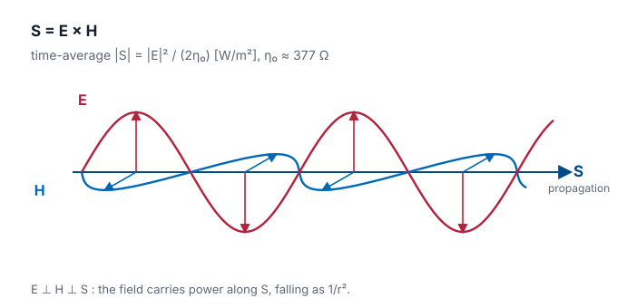
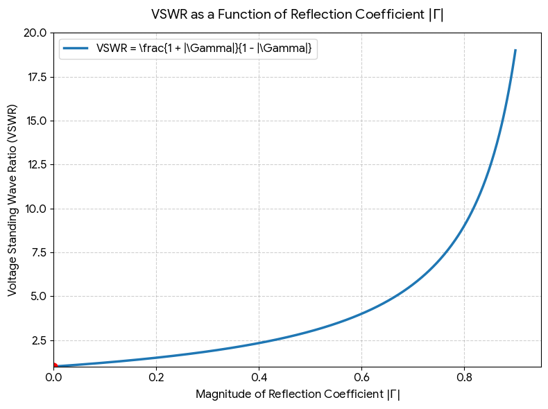
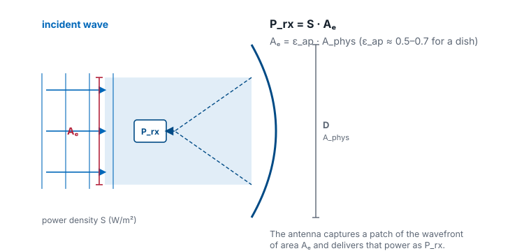
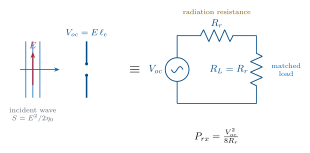
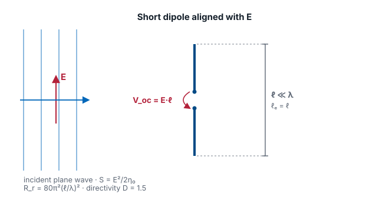

L2 - Basic Properties and Terminology#
Learning outcomes#
By the end of this lesson, you will be able to:
- Trace the physics chain from Maxwell's equations → telegrapher's equations → the wave equation → the plane-wave solution, and identify the time and space dependencies in each.
- Recognize why the far-field of an antenna is a plane-wave-like transverse E-H pair falling off as 1/r.
- Define and compute the headline antenna parameters: radiation intensity, directivity, gain, effective area, beamwidth, boresight, main / side / back lobes.
- Read a radiation pattern and pull out HPBW, FNBW, and sidelobe level.
Part 1: From Maxwell to a wave#
Every antenna analysis in this course starts from Maxwell’s equations. Antennas are a boundary-condition problem: currents on the antenna set tangential fields, those fields must match a solution that radiates outward. To see why they radiate, we walk the chain once.
Maxwell’s equations (source-free, linear media)#
The two curl equations are the ones that make waves. A changing \(\mathbf{H}\) in time creates a spatial curl in \(\mathbf{E}\), and a changing \(\mathbf{E}\) in time creates a spatial curl in \(\mathbf{H}\). Time and space are locked together — you cannot change one without changing the other. That coupling is the entire story of propagation.
The Telegrapher’s Equations#
On a two-conductor transmission line, integrating Maxwell over the cross-section collapses the fields onto voltage \(v(z,t)\) and current \(i(z,t)\):
Same structure as the curl pair: a spatial derivative on one side, a time derivative on the other. Differentiate one, substitute the other, and both \(v\) and \(i\) satisfy the 1-D wave equation
The propagation speed drops out: \(u = 1 / \sqrt{L C}\). On an air-filled line this is essentially \(c\).
The 3-D wave equation#
In free space, the same “curl-of-curl” trick applied to Maxwell gives
The exact same equation applies to \(\mathbf{H}\). This is the equation whose solutions the rest of the course lives in.
A plane-wave solution#
The canonical solution, propagating in \(+\hat{z}\):
\(\omega = 2 \pi f\) is the time frequency — how fast the field oscillates at a fixed point.
\(k = 2 \pi / \lambda\) is the spatial frequency (wave number) — how fast the field oscillates at a fixed instant in time.
\(\omega / k = c\) ties them together: the wave crest moves through space at \(c\).
Key Point
Every field in this course is a function of both time and space. When we suppress the \(e^{j \omega t}\) factor and work with phasors, we’re not throwing time away — we’re agreeing to carry it silently so we can focus on the spatial structure. The moment we hit a bandwidth, dispersion, or pulsed-radar problem, the time dependence comes back and matters.
Impedance of free space and the far-field structure#
Plugging the plane-wave \(\mathbf{E}\) back into Faraday’s law forces \(\mathbf{H}\) to be transverse, perpendicular to \(\mathbf{E}\), and
Far from an antenna, the radiated field looks locally like a plane wave — transverse E and H, ratio \(\eta_{0}\) — with a \(1/r\) amplitude fall-off that we’ll derive from the radiation integrals in L6. That \(1/r\) (equivalently \(1/r^{2}\) in power) is why the antenna’s directional properties even matter — they set how much power lands on your receiver in a given direction.
Interactive — freeze time, freeze space#
The same wave is a ripple in space (freeze the clock → wavelength \(\lambda\)) and a ripple in time (stand at one point → period \(T\)), tied together by the crest speed/phase velocity \(c = \lambda f = \omega / k\). Drag the sliders, or press play to watch a crest travel.
Interactive — a fuller 3-D view#
Interactive EM wave animation by Szilárd Szabó (Szialab). Open in a new tab →
Part 2: Antenna Parameters#
With the wave equation in hand, we can define the working vocabulary for the rest of Module 1.
The Poynting vector#
Before we can say how much power an antenna sends in a given direction, we need the quantity that measures power flow itself. The Poynting vector is
the instantaneous power per unit area carried by the field, pointing in the direction of propagation. For a time-harmonic field we almost always want the time-average,
and in the far field — where \(\mathbf{E}\) and \(\mathbf{H}\) are transverse and locally plane-wave-like with \(|\mathbf{E}| / |\mathbf{H}| = \eta_{0}\) — its magnitude collapses to
Because the far-field amplitude falls as \(1/r\), this power density falls as \(1/r^{2}\) — the inverse-square law. This \(S_{\text{rad}}\) is exactly the quantity that appears in the radiation-intensity definition next.

Radiation intensity#
Power radiated per unit solid angle, in a given direction:
where \(S_{\text{rad}} = |\mathbf{E}|^{2} / (2 \eta_{0})\) is the time-average Poynting magnitude in the far field. The \(r^{2}\) cancels the \(1/r^{2}\) in \(S_{\text{rad}}\), so \(U\) depends only on direction, not distance. Total radiated power is
A solid angle \(\Omega\) (in steradians) is the 3-D analogue of a planar angle: the area a cone cuts out of a unit sphere. A cone pointed in some direction subtends a solid angle \(d\Omega\) and intercepts a patch of area \(r^{2}\,d\Omega\) on a sphere of radius \(r\); the whole sphere is \(4\pi\) sr. Radiation intensity is the power flowing through that cone per unit solid angle — which is why it is a property of direction alone.
Interactive — solid angle in 3-D#
Drag to rotate the sphere; slide the cone half-angle \(\alpha\) to watch the solid angle \(\Omega = 2\pi(1 - \cos\alpha)\) and the patch it carves out grow.
Directivity#
How well the antenna concentrates power in a given direction relative to an isotropic radiator:
\(D\) is dimensionless (or in dBi when converted to decibels). “Directivity” — no losses, purely geometric.
A useful rule of thumb: for a pencil beam with half-power beamwidths \(\theta_{1}\) and \(\theta_{2}\) (in radians),
Gain and radiation efficiency#
Gain is directivity with losses folded in:
Efficiency accounts for ohmic and dielectric losses in the antenna structure. Mismatch loss at the antenna terminals is usually broken out separately as realized gain \(G_{\text{re}} = (1 - |\Gamma|^{2}) G\).
When your instrument or datasheet reports gain in dBi, it is almost always the realized gain in the peak direction.
Interactive — build the gain#
Start from a directivity, then watch radiation efficiency and mismatch each carve a few dB away. The bars trace directivity → gain \(G = \eta_{\text{rad}} D\) → realized gain in dBi.
\(\Gamma\), VSWR, and Power Reflected#
Recall:
\(\Gamma = \frac{V^-}{V^+} \longrightarrow\) reflection coefficient
and
\(\text{VSWR} = \frac{V_{\text{max}}}{V_{\text{min}}} = \frac{ 1 + \vert \Gamma \vert }{1 - \vert\Gamma\vert}\)
\(\vert\Gamma\vert^2 =\) Reflected Power and \(1-\vert\Gamma\vert^2\) = Transmitted Power
Quick Reference \(\Gamma\) vs VSWR vs Power#

| VSWR | |Γ| | Reflected |Γ|² | Transmitted 1−|Γ|² |
|---|---|---|---|
| 1.0:1 | 0.00 | 0% | 100% — Perfect |
| 1.5:1 | 0.20 | 4% | 96% — Good |
| 2.0:1 | 0.33 | 11.1% | 88.9% — Acceptable |
| 3.0:1 | 0.50 | 25% | 75% — Poor |
Interactive — the standing wave behind VSWR#
A mismatch sends part of the wave back; the forward and reflected waves add to a standing wave. Slide \(|\Gamma|\) and press play — the envelope’s maxima and minima set the VSWR, and the nulls stay pinned in place.
Effective area (aperture)#
Flip the antenna around to receive. A passing wave carries power density \(S_{\text{inc}}\) (W/m²); the antenna delivers some power \(P_{\text{rx}}\) to its load. The ratio has units of area and is the effective area (effective aperture):

So how big is that capture area — and where does the famous \(\lambda^{2}/4\pi\) come from? We can derive it.
1 · The antenna is a receiving circuit. An incident field \(E\) aligned with the antenna induces an open-circuit voltage \(V_{\text{oc}} = E\,\ell_e\), where \(\ell_e\) is the antenna’s effective length. The antenna then behaves like a Thévenin source with internal radiation resistance \(R_r\); a conjugate-matched load \(R_L = R_r\) draws the maximum available power:

The \(8\) (not \(4\)) is the time-average of a sinusoid: for a peak amplitude \(V_{\text{oc}}\) across \(R_L = R_r\), the average power is \(\tfrac{1}{2}\,(V_{\text{oc}}/2)^{2}/R_r\).
2 · Do it for the simplest antenna — a short dipole. Its effective length is just its physical length, \(\ell_e = \ell\), and its radiation resistance is \(R_r = 80\pi^{2}(\ell/\lambda)^{2}\). The incident power density is \(S = E^{2}/2\eta_{0}\) with \(\eta_0 = 120\pi\ \Omega\). Divide, and watch the \(\ell\)’s cancel:

3 · Recognize the number. That \(1.5\) is exactly the short dipole’s directivity \(D\). So \(A_e = D\,\lambda^{2}/4\pi\); folding in ohmic losses (\(G = \eta_{\text{rad}}D\)),
4 · It’s universal. We computed only one antenna — but reciprocity guarantees the ratio \(A_e/G\) is the same constant for every antenna, from a short dipole to a giant dish. (Equivalently, a thermodynamic argument — an antenna in a blackbody cavity must absorb and re-radiate equally in each direction — pins down the same constant.) So the boxed relation is truly universal.
Physical vs. effective aperture. An antenna with a real opening of area \(A_{\text{phys}}\) (a horn, a dish) never uses all of it perfectly — illumination taper, spillover, and feed blockage waste some. The aperture efficiency \(\varepsilon_{\text{ap}}\) (typically 0.5–0.7 for a dish) captures this:
Worked example. A 1.2 m dish has \(A_{\text{phys}} = \pi(0.6)^{2} = 1.13\ \text{m}^{2}\); with \(\varepsilon_{\text{ap}} = 0.6\) that is \(A_{e} = 0.68\ \text{m}^{2}\). At 10 GHz (\(\lambda = 3\ \text{cm}\)) the gain is \(G = 4\pi A_{e} / \lambda^{2} \approx 9500\), or 39.8 dBi. A wave of density \(S_{\text{inc}} = 1\ \mu\text{W/m}^{2}\) then delivers \(P_{\text{rx}} = S_{\text{inc}} A_{e} \approx 0.68\ \mu\text{W}\).
A subtlety worth pinning down. People often say “effective area shrinks with frequency,” but that is only true if you hold gain fixed — then \(A_{e} = (\lambda^{2}/4\pi)\,G\) falls as \(\lambda^{2}\). For a fixed physical dish, \(A_{e} = \varepsilon_{\text{ap}} A_{\text{phys}}\) is set by the metal and does not change with frequency; instead the gain climbs as \(f^{2}\), because the same aperture spans many more wavelengths. Both statements are the same universal relation read in opposite directions.
Combining \(A_{e}\) on the receive end with \(G\) on the transmit end gives the Friis transmission equation, the backbone of the link budget and radar range equation in Module 4.
Interactive — compare gain patterns#
Toggle antenna types on/off to compare their E-plane gain patterns against an isotropic reference. Slide the dish diameter to watch the parabolic beam narrow and its peak gain climb — a direct look at how a larger \(A_{\text{phys}} / \lambda^{2}\) buys gain.
Beamwidth, boresight, and lobes#
Read on a radiation pattern:
Boresight — the direction of peak radiation. Antennas are usually aimed along boresight.
Half-power beamwidth (HPBW) — angular width where the pattern drops by 3 dB (to \(1/2\) in power).
First-null beamwidth (FNBW) — angular width between the first nulls on either side of the main lobe. Roughly \(2\times\) HPBW for most simple patterns.
Main lobe — the lobe containing boresight.
Sidelobes — every other lobe. Reported by sidelobe level (SLL) in dB below the main lobe peak.
Back lobe — the lobe centered at \(180^{\circ}\) from boresight. The front-to-back ratio (F/B) is main-lobe peak divided by back-lobe peak.
Beamwidth and sidelobe level are the two knobs you’ll trade against each other in every array-tapering problem in Module 3.
Interactive — read features off a pattern#
The plot below shows the rectilinear (\(\theta\) vs. dB) view of the same aperture pattern we used for the horn and dish in the polar plot. Slide D/λ to change the aperture size; the HPBW, FNBW, and SLL markers move with it.
Summary#
Quantity |
Intuition |
|---|---|
Radiation pattern |
In what direction energy goes |
Gain |
How concentrated the energy is |
Directivity |
Gain without losses |
Polarization |
Orientation of E-field |
Bandwidth |
Range of useful frequencies |
Efficiency |
How much power is actually radiated |
Impedance |
How easily power enters antenna |
Where this shows up next#
L3 (Polarization and Bandwidth) — the direction of \(\mathbf{E}\) and how the parameters we just defined change with frequency.
L4 (Impedance, Feeding, and Baluns) — the transmission-line side of the antenna terminals: matching, \(S_{11}\), VSWR.
L5 (Field Regions) — where the plane-wave approximation is valid and where it isn’t, and what that means for measurement.
L6 (Radiation Integrals) — deriving the \(1/r\) far field from an arbitrary current distribution.
Practice#
Preparing for L3#
Read the assigned sections on polarization and bandwidth before class. Come ready to explain what “vertical polarization” means in terms of the plane-wave solution we wrote today.